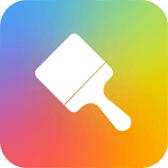

Hyper OS 动态壁纸管理
可视化并扩展增强有关Hyper OS动态壁纸的功能
- AI动态壁纸
-
 AI 动态壁纸 仅支持 Hyper OS 2.0 +的设备，可以通过这里快捷访问AI动态壁纸
- 动态壁纸循环播放
-
动态壁纸循环播放 配置后不支持循环播放的「动态壁纸」将强制开启循环播放，每次更换「动态壁纸」后会导致循环播放失效，需要在此处重新配置
可视化并扩展增强有关Hyper OS动态壁纸的功能
仅支持 Hyper OS 2.0 +的设备，可以通过这里快捷访问AI动态壁纸
配置后不支持循环播放的「动态壁纸」将强制开启循环播放，每次更换「动态壁纸」后会导致循环播放失效，需要在此处重新配置